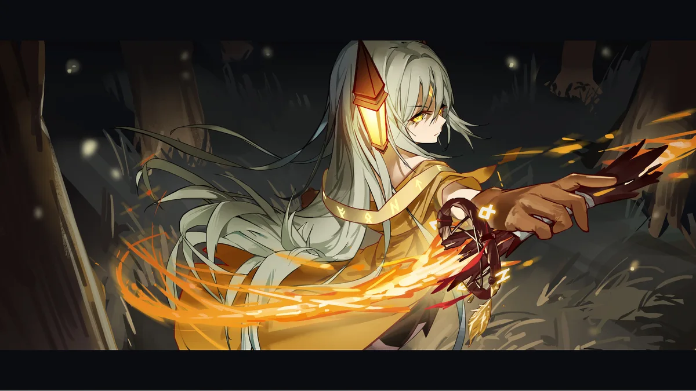
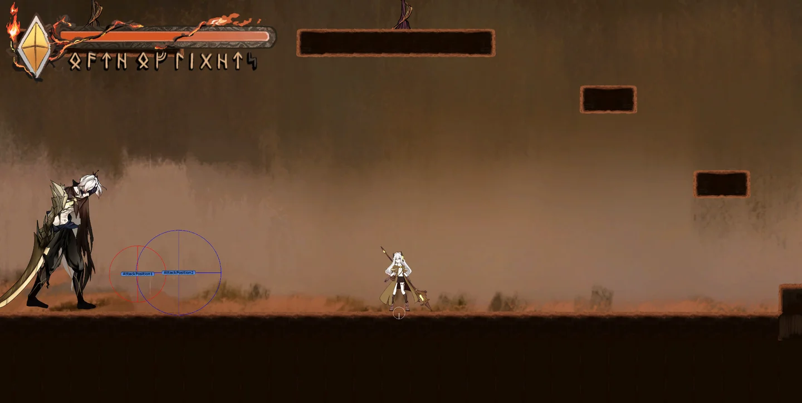
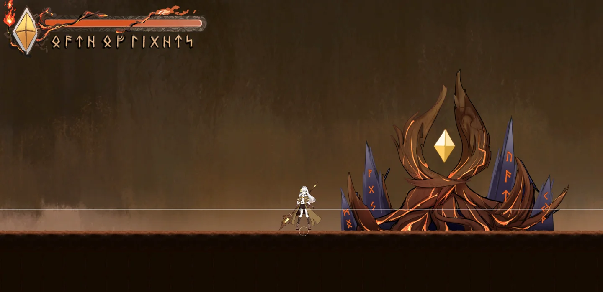
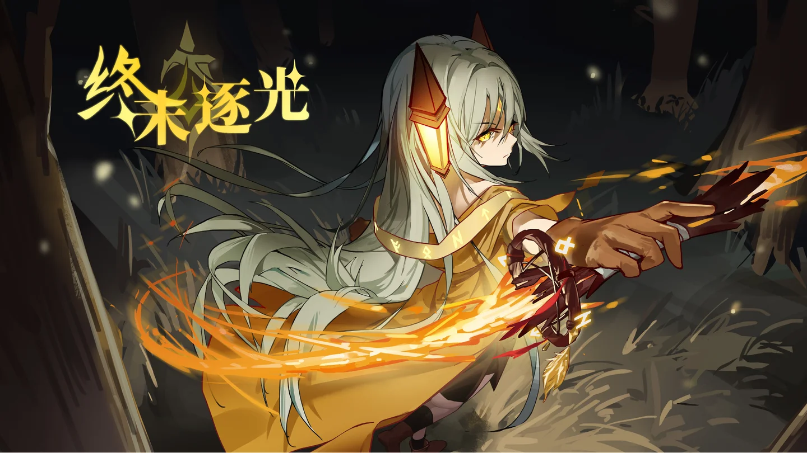
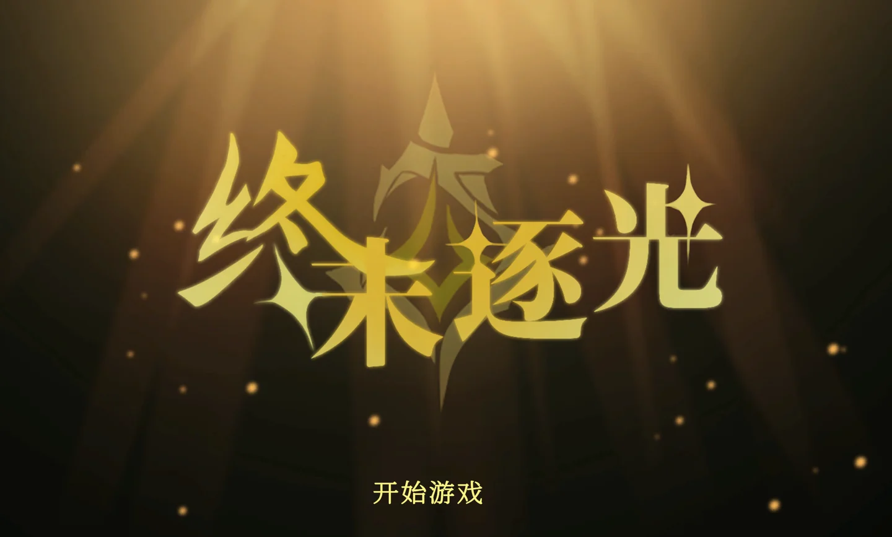
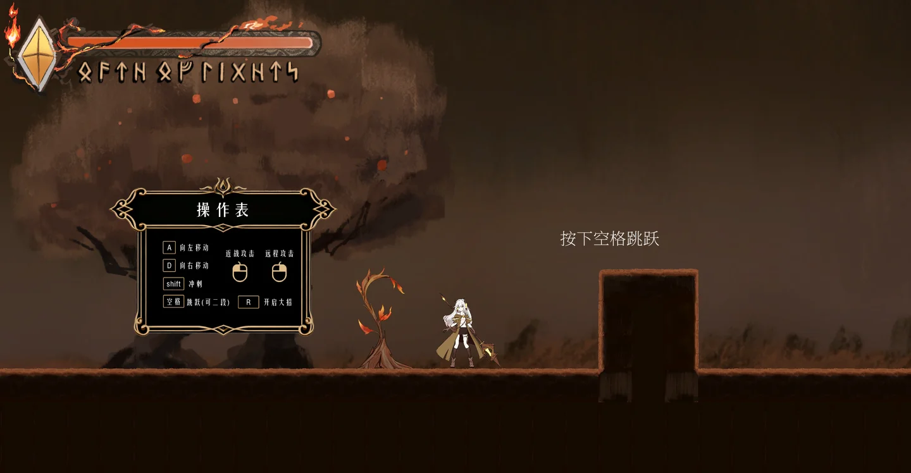
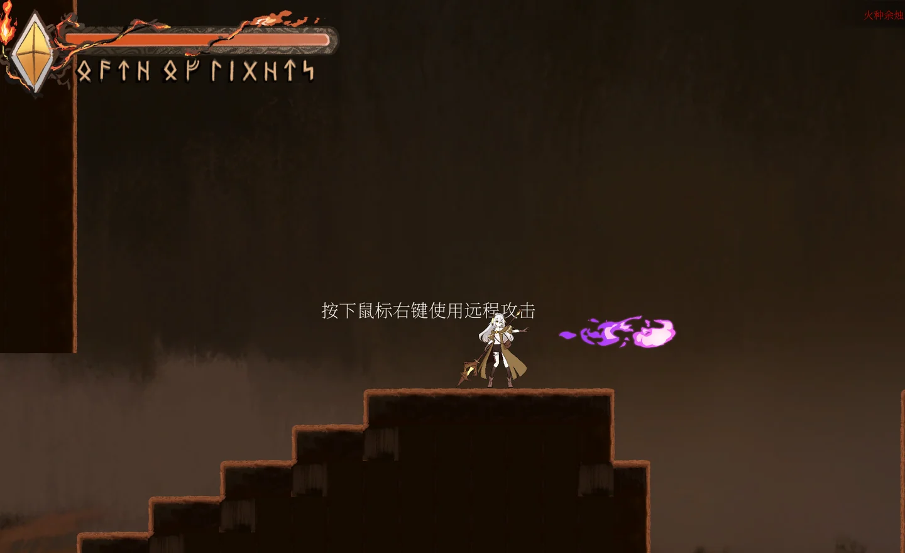
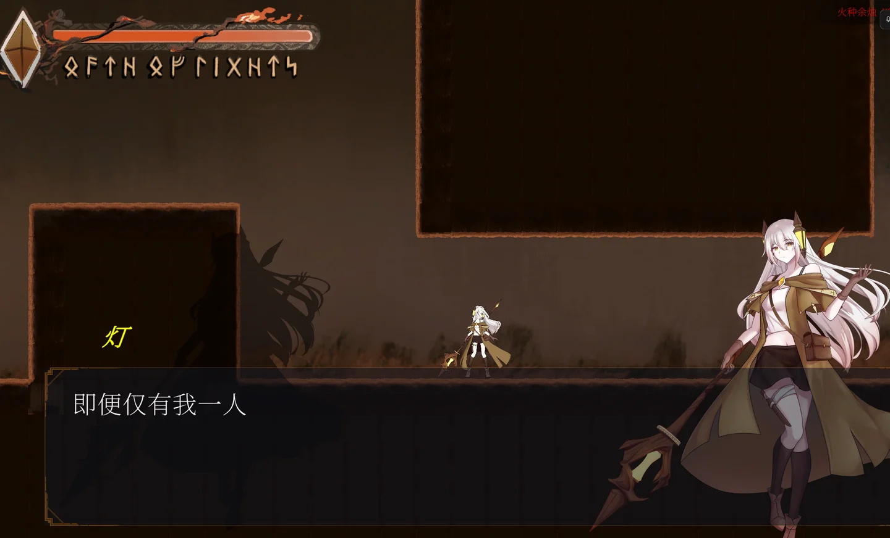

失去光明的世界
Bunana 小队的冒险游戏，参与 TapTap 聚光灯 GameJam。在失去光明的世界里，与离灯相遇。
在失去光明的世界里，遇见离灯。Bunana 小队的 Unity 冒险游戏，我负责人物美术。

▶前往 TapTap 观看演示 ↗
横向展开的场景里，角色与灯火成为视线的落点。

官方游戏画面中的对峙场景，展示角色在关卡中的实际比例与氛围。

作品的官方宣传画面。温暖的灯光与暗色环境构成鲜明对照。

游戏标题界面延续了金色光线与暗色背景的视觉主题。

游戏内的操作提示与场景，引导玩家开始探索。

平台与台阶构成前进路线，角色在光影之间移动。

角色立绘进入对话界面，与关卡中的角色形象相互呼应。
Bunana 小队的冒险游戏，参与 TapTap 聚光灯 GameJam。在失去光明的世界里，与离灯相遇。
在 10+ 人团队中负责人物美术。下方展示离灯立绘与项目视觉素材，游戏 Demo 可在 TapTap 页面查看。